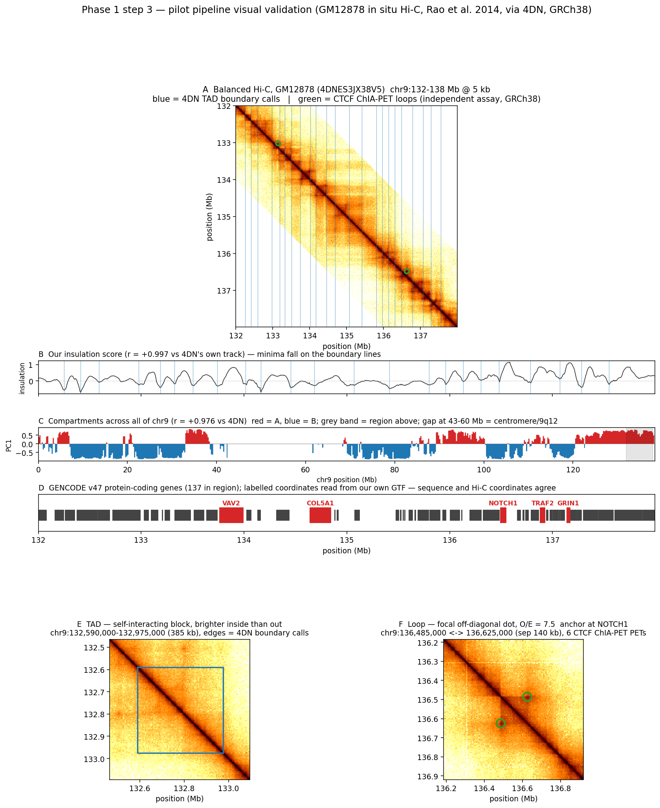

Everything needed to understand this research: what DNA and chromatin are, what a foundation model is, what the project proposes to build, and exactly where it stands.
DNA is a long molecule spelled in four letters: A, T, G and C. The human genome is about 3.1 billion of those letters, split across 23 pairs of chromosomes. Chromosome 9, which this project uses as its test case, is 138,394,717 letters long.
A gene is a stretch of DNA that gets copied into RNA and usually then into protein. Genes are a small minority of the genome: only about 1–2% of human DNA codes for protein directly. The rest was called junk DNA for decades. It is not junk. Much of it is regulatory, and the regulatory part is where this project lives.
Two regulatory pieces matter for what follows. A promoter sits immediately in front of a gene and is where the copying machinery docks to start reading. An enhancer is a separate stretch of DNA that boosts how much a gene gets transcribed — and here is the strange part — an enhancer can sit hundreds of thousands of letters away from the gene it controls, sometimes over a million.
That distance is the seed of the whole research problem. If an enhancer has to physically influence a promoter, and the two are a million letters apart on the same strand, how does one reach the other?
Two metres of DNA fit inside a nucleus about six micrometres across. It gets there by winding around protein spools called histones, coiling those into a fibre, and folding the fibre into large domains that pack into compartments. The folding is not random, and it answers the question from Part 1: the DNA loops, bringing the enhancer into physical contact with the promoter even though a million letters separate them along the strand.
The loop forms by a process called loop extrusion. A ring-shaped protein complex called cohesin grabs the DNA and pulls it through itself, growing a loop, until it hits a pair of binding sites for a protein called CTCF. The ring stalls there and the loop stabilises.
One detail of that mechanism drives a large part of this project. The cohesin ring only stalls when the two CTCF sites point toward each other. CTCF motifs have a direction, like an arrowhead in the sequence, and only convergent pairs anchor a loop. Presence of the motif is not enough; orientation decides. Almost no current sequence-only DNA model is trained in a way that makes orientation-at-a-distance matter.
A TAD, short for topologically associating domain, is a neighbourhood of DNA that contacts itself far more than it contacts anything outside. Enhancers almost always act only within their own TAD, so TAD boundaries decide which enhancers can reach which genes. TADs are largely the same across cell types, which is what makes it defensible to treat them as a general property of the genome rather than a quirk of one cell line.
A loop is the specific point-to-point contact from Figure 2 — two anchors touching, everything between them looped out. Rao and colleagues found roughly 10,000 of them across the human genome in 2014.
An A/B compartment is a much coarser split. A regions are open, gene-rich and active; B regions are closed and inactive. The genome alternates between them along each chromosome.
The assay is called Hi-C. Chemically freeze the genome in its folded shape so anything touching stays stuck together, cut the DNA into fragments, glue together the pairs of fragments that were physically near each other, then sequence the glued pairs. Every read tells you two positions in the genome that were close in 3D.
Tallying millions of those reads gives a contact matrix: rows and columns are positions along a chromosome, and each cell counts how often those two positions were found together. This matrix is the central data structure of the entire field, and learning to read it is most of what you need.
Sequence arrives as FASTA. Gene annotation arrives as GTF. Intervals arrive as BED. Contact matrices arrive as .hic or .cool, and this project reads a multi-resolution .mcool that stores the same chromosome at thirteen bin sizes from 1 kb to 10 Mb.
Every one of those files states positions relative to a reference genome, and human genomics currently has two in circulation: GRCh38, the current one, and hg19, its predecessor. The same gene sits at different numbers in each. Mixing them produces no error message, just silently wrong answers — a hazard this project has already hit twice, documented in Part 7.
A foundation model is trained once on an enormous pile of unlabelled data, then reused for many specific tasks that each have very little labelled data. The training trick is to invent a task the data can grade itself on. For DNA, that means hiding some letters and asking the model to predict them, which is called masked language modelling, or asking it to predict the next letter, which is autoregressive training. Neither requires a human to label anything.
What the model keeps from that process is an embedding: a vector of numbers per position that encodes what the model has learned about that stretch of sequence. Downstream tasks — is this a promoter, is this mutation harmful — then train a small head on those embeddings instead of learning from scratch.
Evo 2 is the largest DNA model published to date: 7 billion and 40 billion parameter versions trained autoregressively on 9.3 trillion nucleotides from over 128,000 species, able to read a million letters at once. It reads sequence only. No Hi-C, no chromatin, at any stage.
Caduceus is much smaller and is this project's architectural parent. It uses a state-space model called Mamba rather than a transformer, and it handles a fact peculiar to DNA: the molecule is double-stranded, so a sequence and its reverse complement are the same physical object read from opposite ends. Caduceus builds that symmetry into the architecture. It is trained with masked language modelling on the human genome and, like Evo 2, sees no 3D structure.
Mamba matters for Part 6, so here is the one idea to carry forward. A state-space model walks along the sequence carrying a running summary called the state. At each position it decays what it already remembers by a factor written Ā, and mixes in the current letter. A separate learned quantity, Δ, controls how fast that decay happens — how long the model holds on to something before forgetting it. That knob is where this project intervenes.
Structure in the Recurrence: Conditioning Genomic Foundation Model Pretraining on 3D Chromatin Contacts
Genomic foundation models are pretrained on DNA sequence alone, yet much of the regulatory logic they are asked to predict is carried by the genome's three-dimensional folding, which determines which enhancers can reach which promoters. Existing work that combines sequence with chromatin contact data does so after the sequence representation is already fixed: CHROME trains an encoder on individual loci and only then adds a graph-attention layer over Hi-C contacts, and Evo2HiC distils a frozen Evo 2 into a compact encoder using Hi-C as a contrastive alignment target. In both, the contact data shapes which learned features are combined, never which features are learned. We propose instead to place chromatin structure inside the pretraining computation itself. Contact-derived features are used to modulate the state-transition dynamics of a bidirectional Mamba backbone, so that Hi-C signal changes how far information propagates along the sequence rather than only what each position encodes. The mechanism adds 0.43% to parameter count over a matched sequence-only baseline. We evaluate whether a structure-shaped representation transfers — a question no sequence-to-structure model has been asked, as a forward-citation sweep over 318 papers citing Akita and Orca confirms — using long-range regulatory and variant-effect tasks, together with a perturbation-sensitivity protocol on which Evo 2 has been reported to fail. Controls include structure shuffled at pretraining time and a distance-matched rewiring that tests whether any apparent structural signal is genomic distance in disguise.
genomic foundation models · 3D genome organisation · Hi-C · topologically associating domains · state-space models · Mamba · self-supervised pretraining · CTCF · variant effect prediction · representation transfer
Four families of work surround this project, and none occupies the same square.
Models that read only Hi-C — HiCFoundation, Hi‑Cformer — learn excellent representations of contact maps but never see a DNA letter, so they cannot score a mutation. A point mutation does not change their input at all.
Models that read only sequence — Evo 2, Caduceus — never see structure. Lee probed Evo 2 directly in April 2026 and found it penalised TAD boundary deletions less than size- and GC-matched random controls, with a paired Wilcoxon p of 0.405, and generated loops with a median enrichment of 0.054 against a reference of 0.388. The conclusion was that Evo 2 learned local CTCF grammar but missed higher-order organisation.
Models that predict structure from sequence — Akita, Orca — do train a sequence model against Hi-C targets, which is the closest existing thing to this proposal. But they are single-purpose folding predictors, evaluated on contact-map accuracy. Nobody has ever taken their internal representations and asked them to do anything else.
Models that combine both after the fact — CHROME, Evo2HiC — are the nearest competitors, and the difference is where the Hi-C arrow enters.
Recall the state-space model from Part 4. Walking along the sequence, the model carries a state h. At each position it does this:
Ā is set by an exponential, Ā = exp(Δ · A), where A is negative so the state always decays. The learned quantity Δ controls the speed. Small Δ means slow decay and a long memory; large Δ means fast forgetting.
The proposal adds two terms, both fed by an eight-number structural summary st computed from the Hi-C matrix at position t:
The first term lets structure retune the memory length of each channel. The second, p, is an extra damping that only ever shortens memory — at a TAD boundary the model can push it up and cut the state off, which is what a boundary does biologically.
B̄·x, the term controlling how much of the current letter enters. They could never touch Ā, which controls what survives. Because Δ sits inside an exponential in Ā, structure here sets how far information travels, not just what gets encoded. That distinction is the entire novelty claim, and it is why a competitor using contrastive alignment on output embeddings cannot reach the same place.
The parameter cost was measured rather than estimated, by building both models and counting tensors: 7,725,312 parameters for the sequence-only baseline against 7,758,354 with the structural terms. That is 0.4277% more, comfortably inside the 5% budget that keeps the comparison fair.
A mechanism that looks different on paper can do nothing in practice. Eight ways that could happen are written down in the architecture spec; three of them produce identical symptoms — the model trains to exactly baseline performance and raises no error — so diagnostics run continuously rather than at the end.
The main test shuffles the structural signal. Four controls of increasing subtlety: zero it out; permute it genome-wide; shift it by 10 Mb so it keeps its smoothness but loses its alignment; and, hardest, rewire the contacts while preserving the distance-decay curve. That last one is the important one. If a model does as well with distance-matched fake structure as with real structure, then what it learned was genomic distance wearing a costume, and the central claim is false regardless of how good the headline number looks.
The source is the densest human Hi-C map published: GM12878 cells from Rao and colleagues, 2014, distributed through the 4D Nucleome consortium. The full multi-resolution matrix is 27.4 GB, so it is never downloaded — the pipeline reads a strip either side of the diagonal directly over HTTP, which takes six and a half minutes instead of hours.
| Measured on chromosome 9 | value |
|---|---|
| Length, from the contact matrix | 138,394,717 bp |
| Length, from the Ensembl sequence file | 138,394,717 bp |
| Bins at 5 kb resolution | 27,679 |
| Contact entries kept | 7,108,483 |
| Bins with no usable signal | 19.31% |
| Sequence that is unresolved (N) | 12.00% |
Those two identical lengths are the first check that the sequence file and the contact matrix describe the same coordinate system. A second, stronger check fell out by accident: the pipeline returned nothing at all for chromosome 9 between 48 and 58 Mb. That turned out to be the centromere and the large heterochromatic block beside it, which GRCh38 represents as a gap. The sequence file is 100% unresolved from about 46 to 60 Mb, and the contact matrix has no usable bins from 43.27 to 60.52 Mb. Two files from different institutions putting the same feature at the same coordinates is much better evidence of alignment than a matching chromosome length.
Eight structural features per bin were computed from scratch, then compared against tracks that 4D Nucleome had derived independently from the same experiment.
| Our feature | against 4DN's own track | correlation |
|---|---|---|
| Insulation, 100 kb window | their insulation score | +0.9969 |
| A/B compartment eigenvector | their compartment track | +0.9759 |
A TAD and a loop are both visible in the processed data. The loop sits at chr9:136,485,000 paired with 136,625,000, 140 kb apart, seven and a half times above its distance-matched expectation. A completely different assay — CTCF ChIA-PET — independently places six read pairs at those same two anchors, and the upstream anchor lands on NOTCH1, a gene at chr9:136,494,433.
The first version of the validation figure circled a bright pixel 1,425 kb from the diagonal and called it a loop. It was noise in a sparse corner. The detector had no upper bound on separation and no requirement that a candidate be a local maximum.
A region was chosen because it was thought to contain the ABL1 gene at chr9:133.7 Mb. That coordinate is hg19. In GRCh38 ABL1 sits at 130.71 Mb, outside the region entirely.
The standard published loop list for this dataset, from Rao and colleagues via GEO, was nearly used to annotate the figure. It is hg19. The mismatch surfaced because its largest chromosome 9 coordinate is 140,570,000 — past the end of chromosome 9 in GRCh38, which is 138,394,717. A file cannot describe a genome it runs off the end of. Nothing would have thrown an error; every loop would simply have been drawn in the wrong place.
Lee's April 2026 probe of Evo 2 was found while sweeping citations, and it argues for this project from the outside. Evo 2 — 7 billion parameters, a million-token context, 9.3 trillion training nucleotides — failed to notice when TAD boundaries were deleted and failed to generate convergent CTCF loops. The paper's own recommendation is that 3D-aware DNA models will need bidirectional architectures, cell-type conditioning, and explicit contact inputs rather than longer context windows. It cites Caduceus by name as the bidirectional answer. This project is a Caduceus-class bidirectional backbone with explicit contact input, arrived at independently.
That result also weakens the most worrying objection to the whole idea, which was that structure might be inferable from sequence anyway, making the Hi-C input redundant. If a 7-billion-parameter model cannot infer it, a 7.7-million-parameter one will not either.
| Term | Meaning |
|---|---|
| A/B compartment | Coarse split of the genome into open, active (A) and closed, inactive (B) regions. |
| Balancing | Correcting a contact matrix so every bin has comparable total signal, removing technical bias. |
| Base pair (bp) | One letter of DNA. 1 kb = 1,000; 1 Mb = 1,000,000. |
| ChIA-PET | An assay that finds contacts anchored by one specific protein. Used here as independent evidence for a loop. |
| ClinVar | Public database labelling human genetic variants as benign or disease-causing. |
| Cohesin | Ring-shaped protein complex that extrudes DNA loops. |
| Contact matrix | Table counting how often each pair of genome positions was found physically close. |
| CTCF | Protein that binds DNA at a directional motif and stops cohesin, anchoring loops and TAD boundaries. |
| Embedding | Vector of numbers a model produces to represent a position or sequence. |
| Enhancer | DNA sequence that increases transcription of a gene, often from far away. |
| eQTL | A genetic variant statistically associated with changed expression of some gene. |
| GRCh38 / hg19 | The current and previous human reference coordinate systems. Not interchangeable. |
| Hi-C | Assay measuring which genome positions are physically close in 3D. |
| Insulation score | Per-position measure of how much contact crosses that point. Local minima mark TAD boundaries. |
| Loop | Point-to-point contact between two anchors, seen as a focal dot off the matrix diagonal. |
| Mamba / SSM | State-space model: reads a sequence carrying a running state, with a learned decay rate. |
| Masked language modelling | Self-supervised training that hides part of the input and predicts it. |
| Observed / expected | Dividing contact counts by their distance-matched average, so distance decay doesn't dominate. |
| Promoter | Region at the start of a gene where transcription begins. |
| Reverse complement | The opposite DNA strand read backwards. Physically the same molecule. |
| TAD | Topologically associating domain: a stretch of DNA that contacts itself much more than its surroundings. |
| Transfer | Reusing a pretrained representation for a task it was not trained on. |
Written 7 August 2026. Every measured number here comes from a script in this repository: scripts/phase1_acquire.py, scripts/phase1_features.py, scripts/phase1_validate_visual.py, scripts/param_accounting.py, scripts/f4_memory_horizon.py. Literature claims are sourced in docs/related_work.md; the mechanism is specified in docs/architecture_spec.md; data provenance is in docs/data_card.md. No model has been trained, and this document contains no experimental results because there are none yet.
Eleven papers define the space this project sits in. The column that decides everything is the fourth: when, during training, does 3D structure first influence the model.
| Work | Sequence in? | Structure in? | Structure enters at | Self-supervised? | Structure needed at inference? |
|---|---|---|---|---|---|
| Lieberman-Aiden 2009 / Dixon 2012 / Rao 2014 | — | — | assay and descriptive work | — | — |
| HiCFoundation (Nat Methods 2026) | no | yes | pretraining | yes | yes |
| Hi-Cformer (bioRxiv 2025) | no | yes | pretraining | yes, masked block reconstruction | yes |
| Evo 2 (Nature 2026) | yes | no | — | yes, autoregressive | no |
| Caduceus (ICML 2024) | yes | no | — | yes, masked LM | no |
| GraphReg (Genome Res 2022) | features | yes | supervised, downstream | no | yes |
| CHROME (Brief Bioinform 2026) | yes | yes | stage 2, post-hoc | no, supervised on ChIP-seq | yes |
| Akita 2020 / Orca 2022 | yes | yes, as target | supervised training target | no | no |
| Evo2HiC (bioRxiv 2025) | yes | yes | contrastive distillation | no, frozen teacher | no, for the DNA-only encoder |
| This project | yes | yes | self-supervised pretraining | yes, masked LM plus structure | target: no |
CHROME — Ye, Du, Chen, Dai, Ma and Liang, Briefings in Bioinformatics 27(4):bbag360, 17 July 2026. Filters Hi-C against a self-avoiding polymer null model simulated over 500,000 chains, keeping only 1.8–6% of contacts as physically specific. Builds a subgraph per ChIP-seq peak with a 4 Mb receptive field at 5 kb bins, then runs two graph-attention layers. Trained in two stages: the encoder is trained on centre nodes alone until validation saturates, and only afterwards are early layers frozen and the graph module added. Supervised on 751 ENCODE assays across GM12878, K562 and IMR-90, with chr9 held out. Structure never influences what the sequence encoder learns.
Evo2HiC — Fang, Wang, Xiao, Hang, Murtaza, Yang, Xu, Jha, Noble and Wang, bioRxiv 10.1101/2025.11.18.689171, November 2025. Distils a frozen Evo 2 (7B) into a 3.6M-parameter seven-layer CNN using two SigLIP contrastive objectives: one aligns the student to Evo 2, the second aligns it to Hi-C patch embeddings. Beats Orca by 10.9% Spearman on contact-map prediction and generalises across 177 DNA Zoo species. Structure genuinely shapes a sequence encoder — but by aligning output embeddings, with no objective over nucleotides anywhere in the model. A keyword count over the full preprint returns zero occurrences of ClinVar, pathogenic, eQTL, variant, masked, MLM, Mamba and state space.
Their third stated limitation reads: "in the current work we extracted embeddings from Evo 2 by freezing its parameters, as the model's size makes fine-tuning computationally challenging. We plan to develop efficient fine-tuning strategies that enable adapting Evo 2 with Hi-C data." A well-resourced group has named this project's question as work they intend to do and have not done.
Lee, arXiv:2604.07196, 8 April 2026. Probed Evo 2 (7B) on 231 TAD boundary regions and 120 convergent CTCF loops from H1-ESC Micro-C. Boundary deletions were penalised less than GC- and size-matched random controls (paired Wilcoxon p = 0.405); CTCF motif inversions and deletions likewise (p = 0.021 and p = 0.006, in the wrong direction). Generated loops reached a median enrichment of 0.054 against a reference of 0.388. The paper concludes Evo 2 "has learned local CTCF grammar but misses higher-order 3D organization" and prescribes bidirectional architectures with explicit 3D contact inputs, citing Caduceus. Preprint, not yet peer reviewed.
DNALongBench, Nature Communications 16(1):10108, 2025. Five long-range tasks with dependencies to 1 Mb, including enhancer–target gene interaction, eQTL and contact-map prediction, already benchmarking Caduceus-Ph and Akita. Adopting it for Phase 5 removes the objection that the evaluation tasks were chosen to flatter. Calibration: contact-map prediction is the hardest task in the suite, best reported correlation 0.233, by Akita.
A forward-citation sweep over 318 papers — 118 citing Orca, 200 citing Akita — found no work that takes either model's learned representations and evaluates them on a task other than predicting folding. Their variant applications all run the model twice, on reference and mutant sequence, and compare predicted contact maps. Internal embeddings are never extracted, frozen and probed, or fine-tuned into another head.
Initialised at W_s = 0, w_g = 0, b_g = −8, so the model is
numerically indistinguishable from the baseline at step zero and any divergence is attributable to learned
structural signal. As p grows without bound, Abar goes to zero and the state resets
outright — so this mechanism contains hard TAD-boundary state resets as its limiting case.
| Model | parameters |
|---|---|
| Sequence-only baseline | 7,725,312 |
| With structural bias | 7,758,354 |
| Added | 33,042 |
| Difference against a 5% budget | +0.4277% |
| ID | Control | Destroys | Preserves | Rules out |
|---|---|---|---|---|
| S0 | zero the structural signal | everything | — | establishes the sequence-only floor at identical parameter count |
| S1 | permute across all bins | alignment and autocorrelation | the marginal distribution | primary reliance probe |
| S2 | circular shift by 10 Mb | alignment only | marginal and autocorrelation | "any smooth auxiliary channel would do" |
| S3 | rewire preserving distance decay | locus-specific structure | the distance-explainable part | "structure is genomic distance in disguise" |
S3 is the control that can end the project. Contact probability falls smoothly with genomic distance under the fractal-globule model of Lieberman-Aiden 2009. If a model performs as well on distance-matched fake structure as on real structure, what it learned is a re-parameterised positional prior and the central claim is false however good the headline number looks.
The gate passes only if, feeding shuffled structure to a real-structure-trained model, the degradation is positive with a 95% bootstrap confidence interval excluding zero and is at least twice the across-seed standard deviation of the real runs. Statistical significance alone is not enough; the effect-size floor is there to stop a p-value standing in for an effect.
Expected ordering, as a falsifiable ladder: real < zeroed ≤ distance-matched ≤ permuted. If distance-matched performs like real, stop. If permuted performs like real, the mechanism is inert and Phase 5 should not begin.
| Failure | What it looks like | Status | |
|---|---|---|---|
| F1 | bias absorbed into the existing offset | trains to exactly baseline loss | highest probability; mitigated by genome-wide standardisation |
| F2 | softplus saturation kills the gradient | structural weights never move | keep the reference dt initialisation |
| F3 | structure inferable from sequence | structural input redundant | largely defused by Lee's Evo 2 probe |
| F4 | Hi-C bin longer than the memory horizon | trains to baseline loss | precondition confirmed present; see below |
| F5 | permeability gate never leaves zero | only half the mechanism is live | monitor the distribution of p |
| F6 | gradient starvation against the main loss | structural pathway never learns | 0.43% of parameters behind two nonlinearities |
| F7 | forward and reverse passes cancel | trains to baseline loss | two of eight features flip sign under reverse complement |
| F8 | structural encoder collapses | reduces to F1 | check the rank of the encoded signal |
F1, F4 and F7 produce the same symptom: the model trains to baseline performance and raises no error. Four diagnostics therefore run continuously rather than at the end — the variance the structural pathway contributes to the timescale, the distribution of the permeability penalty, the growth of the structural weight norm, and a probe asking whether the baseline model's hidden states already predict the structural signal.
| Item | Source |
|---|---|
| Experiment set | 4DN 4DNES3JX38V5 — in situ Hi-C, GM12878, MboI + bio-dATP |
| Publication | Rao SS et al. 2014, PMID 25497547, Lieberman Aiden lab |
| Contact matrix | 4DNFIXP4QG5B, 27.4 GB multi-resolution cooler — read remotely, never downloaded |
| Boundary calls | 4DNFIVK5JOFU — validation target, not model input |
| Insulation track | 4DNFIBMOGOZC — validation target |
| Compartment track | 4DNFILYQ1PAY — validation target |
| Loop evidence | 4DNFI9SL1WSF — GM12878 CTCF in situ ChIA-PET, GRCh38 |
| Reference sequence | Ensembl release 113, GRCh38 chromosome 9 |
| Annotation | GENCODE release 47 |
4D Nucleome's download endpoint returns HTTP 403 to unauthenticated clients; the pipeline resolves
each accession through the API and reads the public bucket field instead, which supports range requests.
Ensembl names the chromosome 9 while 4DN and GENCODE name it chr9; the pipeline
rewrites the label and touches no coordinates. A mismatch there would produce an empty join rather than
an error, and would look exactly like failure mode F1.
| Property | value |
|---|---|
| chr9 length, from the contact matrix | 138,394,717 bp |
| chr9 length, from the Ensembl FASTA | 138,394,717 bp |
| Bins at 5 kb | 27,679 |
| Band entries retained | 7,108,483 |
| Band occupancy | 0.6451 |
| Bins with no balancing weight | 19.31% |
| Unresolved sequence (N) | 12.00% |
| Bins with a complete feature vector | 21,519 (77.74%) |
| Our 100 kb insulation vs 4DN's track | r = +0.9969 |
| Our compartment eigenvector vs 4DN's | r = +0.9759 |
| Feature | Window | Behaviour under reverse complement | |
|---|---|---|---|
| 0–2 | insulation score | 100, 250, 500 kb | symmetric |
| 3 | directionality index | 2 Mb | antisymmetric |
| 4 | log contact density | 2 Mb | symmetric |
| 5 | upstream mass fraction | 2 Mb | antisymmetric |
| 6 | short-to-long range ratio | 100 kb / 2 Mb | symmetric |
| 7 | A/B compartment eigenvector | 250 kb, GC-oriented | symmetric |
The last column is load-bearing rather than descriptive. Failure mode F7 is precisely the case where features 3 and 5 acquire opposite signs in the forward and reverse passes and cancel, leaving a mechanism that looks inert while in fact running two live pathways against each other.

One chromosome, one cell line, one species. Bulk Hi-C averaged over millions of cells, so a TAD boundary here is a population statistic rather than a structure present in any individual cell. A single experiment with no replicate, so seed variance in Phase 5 captures model variance only and says nothing about measurement variance. Balancing, filtering and mapping were done by 4D Nucleome upstream of this project, along with the three tracks used for validation, so their processing choices and any artifacts are inherited. A fifth of the chromosome is structurally blank, dominated by a single 17.25 Mb centromeric gap, which makes usable chr9 two arms of roughly 43 and 78 Mb rather than one continuous sequence.
The first validation figure circled a bright pixel 1,425 kb off the diagonal and called it a loop. It was noise in a sparse corner; the detector had no separation ceiling and no local-maximum test.
A region was selected on the belief that it contained ABL1 at chr9:133.7 Mb. That is an hg19 coordinate. In GRCh38 ABL1 sits at 130,713,043–130,887,675, outside the region.
The standard published loop list for this dataset, GSE63525 via GEO, is hg19. It was caught because its largest chr9 anchor is 140,570,000, past the end of GRCh38 chr9 at 138,394,717 — a file cannot describe a genome it runs off the end of. Nothing would have errored; every loop would have been drawn in the wrong place.
| Decision | Choice | Reasoning | |
|---|---|---|---|
| 1 | Mechanism | structural bias in the recurrence | unreachable by contrastive alignment on output embeddings; contains hard state resets as its limit; cheap to falsify |
| 2 | Reverse-complement handling | Caduceus-PH, data augmentation | equivariance is orthogonal to the hypothesis; coupling them makes a null result uninterpretable |
| 3 | Hi-C resolution | 5 kb, with 1 kb as an ablation | comparability with CHROME; F4 argues for 1 kb but it buys noisier contacts, and both levels sit in the same file |
| 4 | Cross-species scope | out for this paper | Evo2HiC uses 177 species and HiCFoundation 316; entering that lane splits compute against better-resourced groups |
CHROME needs a line-by-line human read; the summary in Appendix A came from automated extraction of the PMC full text. Orca's Results section is paywalled at Nature Genetics with no PubMed Central deposit, so the claim that its representations were never evaluated on a non-folding task rests on the abstract, all ten extended-data captions, and the section headings rather than the body. Lee's Evo 2 probe is a preprint and its peer-review status should be rechecked before it carries weight in a methods section. Evo2HiC should be rechecked for a revision adding variant evaluation before Phase 4 commits GPU time, since that would close the one contribution nothing currently contests.
| Path | Contents |
|---|---|
| docs/related_work.md | eleven papers, the gap table, two follow-up appendices, verification status per claim |
| docs/architecture_spec.md | the mechanism, parameter accounting, controls, eight failure modes, decisions of record |
| docs/data_card.md | sources, measured properties, the feature definition, limitations, the Phase 1 gate |
| docs/primer.html | this document, web edition |
| scripts/phase1_acquire.py | pilot acquisition; resolves 4DN accessions, reads the 27 GB cooler remotely |
| scripts/phase1_features.py | builds the eight structural features and validates against 4DN's tracks |
| scripts/phase1_validate_visual.py | the validation figure |
| scripts/param_accounting.py | instantiates both models and counts parameter tensors |
| scripts/f4_memory_horizon.py | computes memory horizons against Hi-C bin size |
| scripts/build_primer_pdf.py | assembles and renders this PDF |
| data/pilot_manifest.json | accessions, URLs, sizes and checksums; the data itself is not committed |
Phase 3 trains the sequence-only baseline on two L40S GPUs and logs every hyperparameter, seed and metric before any structural model exists, so that no flattering comparison can be chosen after the fact. That run also has to report the trained memory horizon, which decides whether a model this size can represent TAD-scale dependencies at all. If it cannot, the mechanism is re-scoped to sub-TAD structure or the model is made larger, and that decision happens before Phase 4 rather than after it.
Compiled 7 August 2026 by rendering docs/primer.html together with these appendices. Every measured number traces to a named script in the repository. No model has been trained and this document reports no experimental results, because there are none.